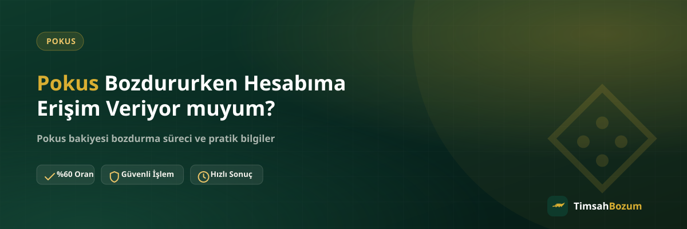

Pokus bakiyesini bozdurmayı düşünen birçok kullanıcının aklındaki ilk soru şu: hesabıma birinin erişmesi mi gerekiyor? Bu endişe anlaşılır, çünkü oyun içi hesaplar genelde kişisel ve değerli. Cevap net: hayır, Pokus bozdurma işlemi hesabına erişim gerektirmez. Bu yazıda sürecin tam olarak hangi bilgilere dayandığını ve hesabının neden güvende kaldığını anlatıyoruz.
Pokus Bozdurma Sürecinde Hesap Erişimi Neden Merak Edilir?
Bakiye tabanlı bir hizmetten bahsedildiğinde akla ilk gelen, "bakiyemi görebilmeleri için hesabıma girmeleri mi gerekiyor" sorusu oluyor. Oysa süreç tamamen tersine işliyor: hesabına kimse girmiyor, sen kendi hesabından aldığın bir ekran görüntüsünü paylaşıyorsun. Bu fark, işlemin güvenliğini anlamanın en temel noktası.
Bu endişe özellikle oyun içi hesaplar için daha da anlamlı, çünkü bu hesaplarda genelde birikmiş oyun verisi, satın alınmış içerik veya bağlı ödeme bilgileri bulunuyor. Hesabına yabancı birinin erişmesi ihtimali, bakiyeni bozdurmaktan vazgeçirecek kadar caydırıcı olabilir. Bu yazıdaki amacımız, sürecin neden bu riski taşımadığını adım adım göstermek.
Pokus Bozdurmak İçin Hangi Bilgiler Paylaşılır?
İşlemi başlatmak için tek ihtiyacın, güncel Pokus bakiyeni gösteren okunaklı bir ekran görüntüsü. Bu görüntüyü WhatsApp hattımızdan paylaşır, bozdurmak istediğin tutarı belirtir ve geçerli oranı teyit edersin. Bunun dışında istenen ek bir bilgi, belge veya erişim yok.
Hesabıma Girmeniz mi Gerekiyor?
Hayır. İşlem boyunca hesabına giriş yapan, hesabını görüntüleyen veya hesabında herhangi bir değişiklik yapan olmaz. Bakiyeni doğrulamak için tek kullanılan şey, senin paylaştığın ekran görüntüsü. Hesabın üzerinde işlem yapan tek kişi yine sensin; süreç boyunca bu değişmez.
Şifremi veya Kullanıcı Bilgilerimi İstiyor musunuz?
Hayır. Kullanıcı adı, şifre, e-posta bilgisi veya hesabına giriş yapmanı sağlayacak herhangi bir bilgi hiçbir aşamada talep edilmez. Böyle bir bilgi istenmesi durumunda bu, resmi sürecin bir parçası değildir ve bilgi paylaşmadan önce durup numarayı doğrulaman gerekir.
SMS Doğrulama Kodu İstenir mi? Bu Neden Önemli?
Bozum işlemine gelen bir SMS doğrulama kodu asla istenmez. Bu kod, hesabına veya hattına erişim vermek anlamına gelir ve bakiye bozdurma süreciyle hiçbir ilgisi yoktur. Böyle bir talep gelirse işlemi hemen durdurmalı ve kodu kimseyle paylaşmamalısın; bu tür bir istek dolandırıcılık şüphesi olarak değerlendirilmeli.
Ekran Görüntüsü Paylaşmak Güvenli mi?
Evet. Paylaştığın ekran görüntüsü sadece güncel bakiyeni doğrulamak amacıyla kullanılır, başka bir işleme veya kayda dönüşmez. Görüntüde tutarın ve tarihin net görünmesi yeterli; hesap bilgilerinin veya kişisel verilerin görüntüde fazladan yer alması gerekmez. Ekran görüntüsünü alırken sadece bakiye bölümünün okunaklı olmasına dikkat etmen yeterli.
Peki Bozdurma İşlemi Nasıl Tamamlanır?
Süreç dört basit adımdan oluşuyor: resmi WhatsApp hattımızdan (+90 543 887 21 71) yazarsın, bakiye ekran görüntünü paylaşırsın, güncel oranı teyit edersin ve onay sonrası ödemen WhatsApp üzerinden görüşülen yöntemle yapılır. Üyelik, form doldurma veya kimlik belgesi gerekmez; TimsahBozum her gün 10:00-03:00 arası bu süreci yürütür.
Bu dört adımın her birinde hesabına dair tek referans, paylaştığın ekran görüntüsü. Oranı teyit ettikten sonra işlemi yapıp yapmamak tamamen senin kararın; bilgiyi paylaşmak herhangi bir taahhüt oluşturmaz. Ödeme yöntemini WhatsApp üzerinden birlikte belirlediğimiz için bu aşamada da hesabına dair ek bir bilgi istenmez.
İşlem Kayıtlarını Saklamalı mıyım?
İşlem tamamlandıktan sonra WhatsApp görüşmesini ve teyit ettiğin oranı bir süre saklaman faydalı olabilir; ileride bir soru çıkarsa hangi tutarın hangi oranla bozdurulduğuna dair yazılı bir referansın olur. Bu kayıt hesabınla ilgili değil, yalnızca işlem detaylarıyla ilgilidir; ayrı bir hesap bilgisi veya erişim gerektirmez.
Hesabıma Erişim İsteyen Biriyle Karşılaşırsam Ne Yapmalıyım?
Resmi sürecimiz hiçbir aşamada hesap erişimi, şifre veya SMS kodu istemediği için böyle bir talep aldığında bu kişinin resmi hattımızdan yazmadığını anlayabilirsin. Bu durumda bilgi paylaşmadan önce numarayı doğrula; işlemlerin yalnızca +90 543 887 21 71 numarasından yürüdüğünü unutma. Farklı bir numara veya platformdan gelen bir talep varsa, resmi hattan teyit almadan hiçbir bilgi paylaşma.
Bozdurma Sonrası Hesabımda Bir Değişiklik Olur mu?
Hayır. İşlem tamamlandıktan sonra hesabının durumu, bozdurduğun tutar dışında herhangi bir şekilde değişmez; hesap ayarların, oyun içi durumun veya erişim bilgilerin işlem öncesiyle aynı kalır. Süreç boyunca hesabına giriş yapılmadığı için, işlem sonrası da hesabında senin yapmadığın hiçbir değişiklik görmezsin. Bu, hesabına erişim istenmeyen bir sürecin doğal bir sonucu.
Neden Bazı Siteler Hesap Erişimi veya Ek Bilgi İster?
Bozum piyasasında her hizmetin çalışma şekli aynı olmayabilir; hesap erişimi, şifre veya SMS kodu isteyen bir teklifle karşılaşırsan bu, resmi ve güvenli bir sürecin işaretlerinden değildir. Böyle bir talep hesabının veya bakiyenin senin kontrolün dışına çıkmasına yol açabilir. TimsahBozum'da sürecin yalnızca ekran görüntüsü ve WhatsApp üzerinden yürümesinin nedeni tam olarak bu riski ortadan kaldırmak; hesabın her aşamada senin kontrolünde kalır.
İlgili Yazılar
- Bozum İşleminde Hesabıma Erişim Veriyor muyum?
- Bozum Yaparken SMS Doğrulama Kodu İsteyen Kişilere Dikkat
- Pokus Bakiyesi Kısmi Olarak Bozdurulabilir mi?
Özetle, Pokus bakiyeni bozdururken hesabına dair hiçbir erişim, şifre veya doğrulama kodu istenmez; tek gereken güncel bakiyeni gösteren bir ekran görüntüsü. Güncel Pokus bozdurma oranını teyit etmek ve işlemini başlatmak için WhatsApp hattımızdan yazabilirsin. Hizmet hakkında daha fazla bilgi için Pokus bozdurma sayfamıza da göz atabilirsin.